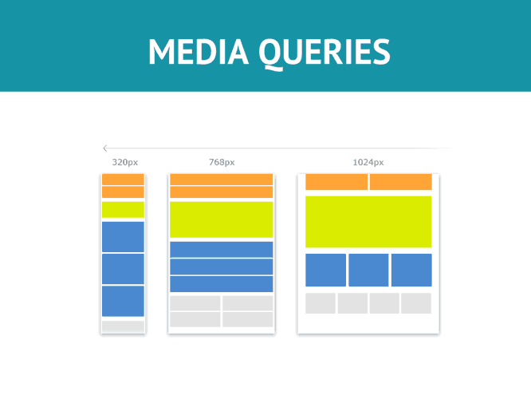

¿Qué son las media querys? Las media queries son una sintaxis especial para CSS que nos permite definir unos estilos que solo se aplicarán en el caso de que se cumplan unas condiciones definidas. Podemos asimilarlos a unas líneas de código opcional, que sólo se mostrarán para algunos usuarios o dispositivos.
Media query CSS Media queries y diseño responsive. La revolución del diseño web móvil.
En un momento donde el tráfico móvil se multiplica cada año, ya no servían las webs estáticas diseñadas para mostrarse en una resolución concreta (¿recuerdas aquello de web diseñada para mostrarse en 600px x 480px?). Era necesario adaptar los diseños a unas dimensiones concretas para que el usuario recibiera la información web en su dispositivo sin tener de hacer zoom para leer los textos. En este momento surgen dos modos de trabajar. La primera abogaba por tener dos versiones de la misma web, una para escritorio y otra para móvil. En la mayoría de los casos no están conectadas entre sí. Esto era costoso de mantener (dos webs) y además no siempre se mostraba el mismo contenido y diseño a ambos usuarios. La segunda forma de trabajar es usar un mismo diseño para ambas resoluciones. Un diseño que se pudiera adaptar a unas determinadas resoluciones o ser flexible en su totalidad, independientemente del contenido y diseño que tuvieran. A esta nueva forma de trabajar se le denominó diseño web responsive. Y como el encargado del diseño en la web es el CSS, surgió un nuevo elemento capaz de incorporar esta flexibilidad a la hoja de estilos: las media queries, que pueden abarcar porciones de código que sólo se aplicarán según que condiciones: si la resolución de pantalla es pequeña, si es muy grande, si el dispositivo está en posición horizontal…